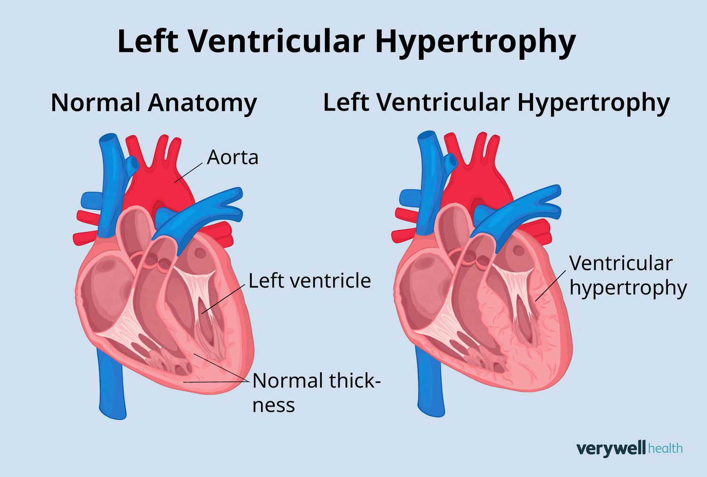

Left Ventricle
The left ventricle is the chamber of the heart responsible for pumping oxygenated blood into the aorta, and then throughout the body. It has the thickest muscular wall to provide the force needed for systemic circulation.
Working of the Left Ventricle:
Receiving Blood:
The left ventricle receives oxygen-rich blood from the left atrium through the mitral valve.Contraction:
During systole, the ventricle contracts and sends blood through the aortic valve into the aorta.Distribution:
The blood travels from the aorta to nourish all parts of the body.Relaxation Phase:
In diastole, the ventricle relaxes and refills with blood from the left atrium.
Summary of Blood Flow through the Left Ventricle:
- Step 1: Blood enters from the left atrium via the mitral valve.
- Step 2: Left ventricle contracts, pushing blood into the aorta.
- Step 3: Blood is distributed to the rest of the body.
Importance:
The left ventricle is crucial in systemic circulation. Its strength ensures that oxygenated blood reaches all parts of the body efficiently.
Go Back to Home
Top